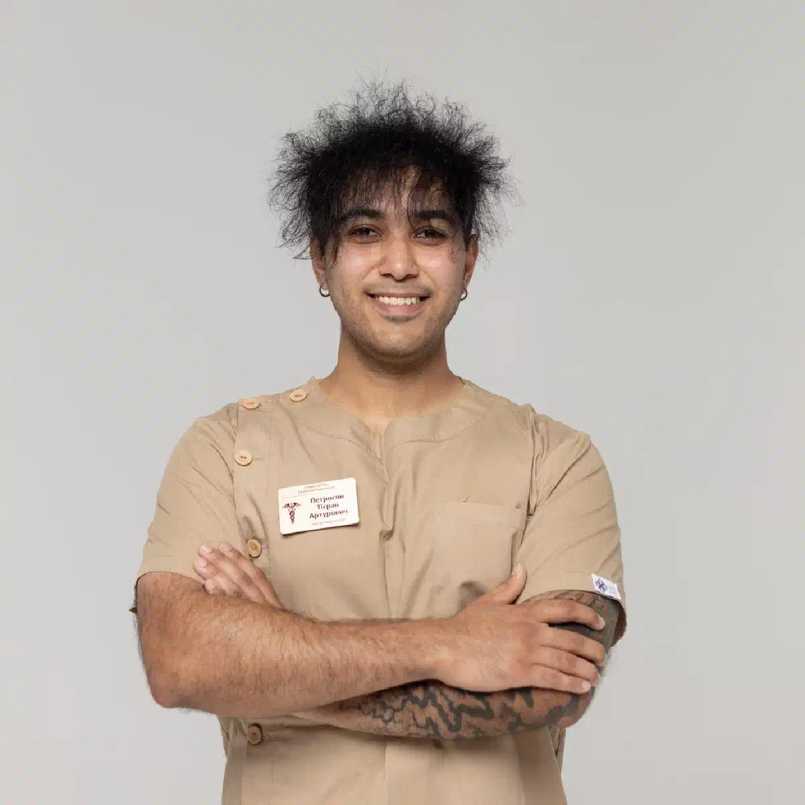

+38(068) 79 72 782
+38(068) 79 72 782Крапельниця від солі Харків
Конфіденційна медична допомога


Безкоштовна консультація, працюємо цілодобово 24/7
Конфіденційна медична допомога

Дата написання: 5 вер. 2025 р.
Останнє оновлення: 27 вер. 2026 р.
Під назвою «солі» зазвичай мають на увазі різні синтетичні психостимулятори, зокрема речовини з групи синтетичних катинонів. Їхній точний склад при нелегальному придбанні часто невідомий, тому реакція організму після вживання може бути непередбачуваною. Можливі виражена тривога, безсоння, прискорене серцебиття, підвищення артеріального тиску, зневоднення, збудження, параноїдальні ідеї та галюцинації. Крапельниця від солей у Харкові може використовуватися як частина медичної допомоги лише після оцінки стану пацієнта. Лікар має враховувати, яка речовина ймовірно вживалася, коли відбувся останній прийом, як довго тривало вживання, чи були присутні алкоголь або інші наркотики та які симптоми спостерігаються на цей момент. Універсального складу крапельниці після синтетичних катинонів не існує. Залежно від стану може знадобитися детоксикація від наркотиків, симптоматична терапія або лікування у стаціонарі.
Після вживання синтетичних стимуляторів людина може відчувати виражену слабкість, зневоднення, тривогу, безсоння, прискорене серцебиття та загальне виснаження. Необхідність інфузійної терапії визначається не самим фактом вживання наркотику, а станом пацієнта. Перед процедурою потрібен медичний огляд та оцінка життєво важливих показників. Звернутися по допомогу бажано, якщо зберігаються виражена слабкість, сухість у роті, запаморочення, тривале безсоння, сильна тривога, тремор, тахікардія, підвищення тиску, нудота або загальне погіршення стану. При виражених симптомах може знадобитися зняття наркотичної інтоксикації під медичним наглядом. Важливо розуміти, що крапельниця не є способом миттєво «вивести» наркотик з організму. Вона використовується лише як частина медичної допомоги за наявності відповідних показань.
У деяких випадках наркологічна допомога вдома може бути надана після вживання солей, якщо стан пацієнта відносно стабільний. Після приїзду лікар оцінює рівень свідомості, артеріальний тиск, частоту пульсу, ступінь зневоднення, вираженість збудження та інші симптоми. Також необхідно з’ясувати, коли востаннє вживалася речовина та чи приймалися додатково алкоголь, ліки або інші наркотики. Після огляду фахівець визначає, чи допустима крапельниця від наркотиків вдома та чи потрібна інфузійна терапія. Домашня допомога підходить далеко не кожному пацієнту. Якщо людина виражено збуджена, дезорієнтована, відчуває галюцинації, має судоми, високу температуру або тяжкі серцево-судинні симптоми, безпечнішим варіантом стає наркологічний стаціонар.
Стан після синтетичних психостимуляторів іноді змінюється досить швидко. Тому відкладати звернення по медичну допомогу при виражених симптомах не слід. Терміновий виклик нарколога може знадобитися при сильній тривозі, тахікардії, безсонні, вираженій слабкості, підвищеному тиску або різкому погіршенні загального самопочуття. При зверненні важливо повідомити фахівцеві вік пацієнта, приблизний час останнього вживання, тривалість епізоду, передбачувану речовину та наявність інших психоактивних речовин. Також бажано уточнити, чи перебуває людина у свідомості, чи є виражена тривога, агресія, галюцинації та хронічні захворювання. Чим більше достовірної інформації отримує лікар, тим точніше можна попередньо оцінити ризики.
Симптоми залежать від конкретної речовини, кількості, тривалості вживання та індивідуальної реакції організму. Після синтетичних стимуляторів можуть виникати виражена тривожність, панічні відчуття, безсоння, підозрілість, дратівливість, прискорене серцебиття, підвищення тиску, пітливість, тремор, сухість у роті та зниження апетиту. При тяжчому стані можливі сильне психомоторне збудження, сплутаність свідомості, галюцинації та параноїдальні переживання. Після припинення стимулювальної дії часто виникає виражене фізичне та емоційне виснаження. Якщо симптоми виражені або зберігаються тривалий час, може знадобитися лікування наркотичної інтоксикації.
Єдиної універсальної схеми крапельниці після вживання солей не існує. Вибір медичної допомоги залежить від стану конкретного пацієнта. Лікар оцінює ступінь зневоднення, тиск, частоту серцевих скорочень, температуру тіла, психічний стан і супутні захворювання. За наявності показань інфузійна терапія може застосовуватися для корекції дефіциту рідини та окремих порушень водно-електролітного балансу. Інші засоби підбираються індивідуально залежно від наявних симптомів. Самостійно ставити крапельницю або повторювати раніше використану схему лікування небезпечно. Навіть якщо під час попереднього вживання людина нормально переносила певні препарати, наступного разу стан може суттєво відрізнятися.
Детоксикація після наркотиків спрямована на стабілізацію стану людини та корекцію наслідків інтоксикації. Водночас важливо розуміти, що медична детоксикація не означає миттєве очищення організму від психоактивної речовини. Основне значення має стан пацієнта: наявність зневоднення, серцево-судинних порушень, вираженої тривоги, безсоння та психічних симптомів. Після стабілізації необхідно визначити, чи було вживання одноразовим або людина регулярно повертається до наркотичної речовини. Якщо епізоди повторюються, однієї детоксикації недостатньо. У такій ситуації потрібне лікування наркотичної залежності, спрямоване на роботу з потягом та причинами повторного вживання.
Виражена тривога є одним із можливих проявів вживання синтетичних стимуляторів. Людина може відчувати сильне внутрішнє напруження, прискорене серцебиття, страх і відчуття небезпеки, що насувається. Іноді тривога поступово переходить у виражену підозрілість. Не рекомендується намагатися самостійно усунути такий стан алкоголем або безконтрольним прийомом сильнодіючих заспокійливих препаратів. Якщо людина зберігає контакт з оточенням, бажано забезпечити спокійну обстановку та виключити додаткову стимуляцію. При наростанні збудження, агресії, галюцинаціях або вираженій дезорієнтації потрібна екстрена наркологічна допомога.
Після тривалого вживання синтетичних стимуляторів організм може перебувати у стані вираженого виснаження. Кілька діб недостатнього сну, відсутність нормального харчування та дефіцит рідини збільшують навантаження на організм. Після припинення дії речовини можуть з’являтися сильна слабкість, сонливість, зниження настрою, тривожність та емоційна спустошеність. Після огляду лікар може визначити необхідність крапельниці після тривалого вживання наркотиків та іншої симптоматичної допомоги. При цьому тривале вживання потребує особливо уважної оцінки психічного стану. Якщо з’явилися психоз, судоми, виражена дезорієнтація або інші небезпечні симптоми, домашня крапельниця не є достатньою допомогою.
Лікування наркоманії у стаціонарі може знадобитися, якщо стан пацієнта неможливо безпечно контролювати вдома. Причиною госпіталізації можуть стати виражений психоз, галюцинації, тяжке збудження, судоми, втрата свідомості, висока температура, серйозні порушення серцевого ритму, біль у грудях або виражена дезорієнтація. Стаціонар також може бути кращим варіантом після тривалого вживання, якщо людина не здатна самостійно припинити епізод. У медичному закладі є можливість постійно спостерігати за станом пацієнта та швидко реагувати на його зміни. Після стабілізації може бути продовжене стаціонарне лікування наркоманії або підібрана подальша реабілітаційна програма.
Виражене психомоторне збудження після вживання синтетичних стимуляторів може бути потенційно небезпечним. Людина здатна поводитися хаотично, не сприймати аргументи оточення, відчувати сильний страх та підозрілість. Не рекомендується сперечатися з нею, намагатися переконати в нереальності переживань або фізично утримувати її, якщо це створює ризик травми. Слід за можливості прибрати з навколишнього простору предмети, якими можна завдати шкоди, та звернутися по професійну допомогу. Якщо збудження супроводжується високою температурою, болем у грудях, порушенням свідомості або судомами, потрібна екстрена наркологічна допомога.
Психоз після синтетичних стимуляторів може проявлятися галюцинаціями, параноїдальними ідеями, відчуттям переслідування, агресією та дезорієнтацією. У такому стані людина може становити небезпеку для себе або оточення. Звичайна домашня крапельниця не є повноцінним способом лікування наркотичного психозу. При виражених психічних порушеннях потрібна медична оцінка, а в окремих випадках — госпіталізація. Після стабілізації стану доцільно продовжити лікування залежності від наркотиків, особливо якщо подібні епізоди вже виникали раніше.
Термінова медична допомога необхідна при появі симптомів, які можуть свідчити про тяжкий стан. До них належать втрата свідомості, судоми, виражене порушення дихання, сильний біль у грудях, тяжкі порушення серцевого ритму, висока температура, різко змінена свідомість, тяжке збудження та психоз. Також небезпечною ознакою є ситуація, коли з людиною неможливо встановити нормальний контакт або її стан швидко погіршується. За таких симптомів необхідно звертатися по екстрену медичну допомогу. Намагатися самостійно підбирати медикаменти для «заспокоєння» пацієнта небезпечно.
Термін «солі» не означає одну конкретну хімічну речовину. Під такою назвою можуть поширюватися різні синтетичні катинони та їхні суміші. Саме тому неможливо заздалегідь визначити універсальну схему лікування лише на підставі слів пацієнта про те, що він вживав «сіль». При наданні допомоги фахівець орієнтується насамперед на симптоми та загальний стан людини. Якщо відома точна назва речовини, цю інформацію бажано повідомити лікарю. Залежно від стану може використовуватися детоксикація при наркотичній інтоксикації, симптоматичне лікування, спостереження або госпіталізація.
Швидкість відновлення індивідуальна. При відносно легкому стані та зневодненні деякі симптоми можуть зменшуватися після відпочинку та медичної допомоги. Однак безсоння, тривога, емоційне виснаження та труднощі з концентрацією уваги можуть зберігатися довше. Після тривалого вживання відновлення нерідко потребує кількох етапів. Важливо розуміти, що покращення фізичного стану ще не означає усунення залежності. Якщо людина регулярно повертається до вживання, після стабілізації слід продовжити лікування наркоманії.
Після вживання синтетичних психостимуляторів не слід намагатися нейтралізувати їхню дію алкоголем, іншими наркотиками або випадковою комбінацією лікарських препаратів. Не рекомендується самостійно ставити крапельниці та використовувати препарати, призначені іншій людині. При вираженій тахікардії, підвищенні тиску та слабкості небажані інтенсивні фізичні навантаження. При тривозі та психозі слід уникати конфліктів і додаткового емоційного тиску. Якщо людина має виражене порушення свідомості, її не можна залишати без нагляду. При погіршенні стану безпечніше звернутися по медичну допомогу, ніж експериментувати із самостійним лікуванням.
Для деяких пацієнтів особливо важлива конфіденційність звернення. У приватних медичних закладах можуть бути доступні різні формати анонімної наркологічної допомоги, однак конкретні умови слід уточнювати безпосередньо під час звернення. При цьому лікарю необхідно повідомляти достовірну інформацію про вживання. Важливо розповісти, коли відбувся останній прийом, скільки часу тривало вживання та чи приймалися додатково алкоголь, ліки або інші наркотики. Конфіденційність не повинна заважати повноцінній медичній оцінці. Після стабілізації пацієнт може продовжити анонімне лікування наркоманії, якщо це передбачено обраним закладом і відповідає правилам надання медичної допомоги.
Вартість крапельниці від солей у Харкові починається від 2499 грн.
Для виклику фахівця необхідно повідомити адресу пацієнта в Харкові та коротко описати його стан. Важливо вказати вік, передбачувану речовину, час останнього вживання та тривалість епізоду. Також необхідно повідомити, чи перебуває людина у свідомості, чи є виражена тривога, агресія, галюцинації, тахікардія або інші симптоми. Після приїзду фахівець проводить огляд і вирішує, чи допустима крапельниця від наркотиків вдома або пацієнту потрібен стаціонар. При стабільному стані може бути організований виклик нарколога в Харкові з подальшою оцінкою та рекомендаціями. Якщо до приїзду лікаря стан різко погіршується, необхідно звертатися по екстрену допомогу.
Після стабілізації фізичного стану лікування не завжди закінчується. Якщо людина регулярно вживає синтетичні психостимулятори, необхідно працювати із самою залежністю. Реабілітація наркозалежних може включати індивідуальну та групову психотерапію, відновлення режиму сну, зміну звичного оточення, роботу з потягом і профілактику зриву. Особлива увага приділяється ситуаціям, які раніше провокували вживання. Це можуть бути стрес, певна компанія, алкоголь, конфлікти, самотність або інші емоційні фактори. Після тривалого вживання може знадобитися реабілітація після наркотиків, спрямована на збереження тверезості та поступове повернення до звичайного соціального життя.
Крапельниця та лікування залежності мають різні завдання. Інфузійна терапія може застосовуватися для корекції окремих наслідків інтоксикації та зневоднення. Однак вона не усуває психологічний потяг, причини вживання та сформовані поведінкові звички. Людина може фізично почуватися значно краще після стабілізації, але через деякий час знову повернутися до речовини. Саме тому при повторному вживанні потрібне комплексне лікування наркоманії, що включає роботу не лише з фізичними наслідками, а й із психологічними механізмами залежності.
Можливість конфіденційного звернення залежить від формату медичної організації та чинних правил надання допомоги. У приватних закладах можуть бути доступні конфіденційні формати консультації та лікування. Під час звернення бажано заздалегідь уточнити порядок оформлення медичної документації. Для безпечного лікування лікарю необхідно знати достовірні відомості про вжиті речовини, додаткові препарати та стан пацієнта. Якщо після стабілізації потрібна тривала терапія, може бути запропоноване лікування залежності без постановки на облік у межах можливостей конкретної медичної організації.
Родичі нерідко першими помічають зміни поведінки: безсоння, незвичну активність, дратівливість, підозрілість, фінансові проблеми або регулярні зникнення. Розмову краще будувати на конкретних спостереженнях, а не на звинуваченнях і погрозах. Якщо людина перебуває у стані тяжкої інтоксикації або психозу, обговорювати з нею подальше лікування в цей момент зазвичай малоефективно. Основне завдання полягає у забезпеченні безпеки та отриманні медичної допомоги. Після стабілізації можна запропонувати консультацію нарколога та обговорити подальше лікування. Родичам також може бути корисна консультація для родичів залежного, щоб зрозуміти, як реагувати на повторне вживання та як мотивувати людину на добровільну терапію.
Наслідки вживання наркотичних речовин можуть проявитися у будь-який час доби. Тому медична допомога іноді потрібна вночі, рано-вранці, у вихідний або святковий день. Крапельниця від солей у Харкові цілодобово можлива лише після оцінки стану пацієнта та за відсутності симптомів, які потребують обов’язкової госпіталізації. Лікар оцінює життєво важливі показники, характер симптомів, тривалість вживання та можливі ризики. Якщо стан пацієнта дозволяє лікуватися вдома, може бути надана цілодобова наркологічна допомога з підбором тактики за результатами огляду. При психозі, судомах, втраті свідомості, високій температурі, порушенні дихання, вираженому болю в грудях або серйозних порушеннях серцевого ритму домашня крапельниця не є достатнім варіантом лікування.
Телефон для консультації та виклику нарколога додому в Харкові: +38(050-021-69-57)

Статтю перевірено експертом
Робулець Ольга
Лікар-нарколог, ординатор
Можливо цікава стаття:
Драгси: що це таке і чим вони небезпечні

Так, ми суворо дотримуємося повної конфіденційності на всіх етапах лікування. Інформація про пацієнта, діагноз та проходження терапії не передається третім особам. Звернення до нас не тягне за собою постановку на облік. Ви можете бути впевнені у безпеці та анонімності.
Програма лікування розробляється індивідуально після консультації з фахівцем. Враховуються вид залежності, її тривалість, фізичний та психологічний стан пацієнта. Такий підхід дозволяє підвищити ефективність терапії та знизити ризик зриву. Ми не використовуємо шаблонні рішення.
Так, ми супроводжуємо пацієнтів і після основного курсу лікування. Проводяться консультації, рекомендації щодо адаптації та профілактики рецидивів. За потреби можлива подальша психологічна підтримка. Це допомагає зберегти результат та повернутися до повноцінного життя.
Анонимно

Ну в хлопців просто золоті руки й світла голова, мене капали Олексій та Владислав, буквально за декілька сеансів я наче заново народився, до цього пив більше 3х тижнів, не міг зупинитись, дуже радий що знайшов саме цих спеціалістів, всім рекомендую
Анонимно
В течение нескольких лет я злоупотреблял алкоголь, что привело к увольнению с работы и вызвало у меня мысли о суициде. Понимая, что такой образ жизни неприемлем, я обратился за помощью в клинику “Амбрела”. Здесь я смог преодолеть свою зависимость от спиртного благодаря заботливым и опытным врачам, а также эффективной системе лечения. Спустя более года я полностью избавился от желания употреблять алкоголь, и теперь моя жизнь вернулась в норму. Я даже не приближаюсь к спиртному! Благодарю врачей клиники “Амбрела” за их помощь и заботу.
Анонимно
Я обращался за помощью в различные клиники, пытаясь избавиться от своей зависимости от алкоголя, но без особых успехов. Никак не мог справиться с желанием прибегнуть к бутылке, пока друг не посоветовал мне обратиться в центр “Амбрелла”. Я записался на прием и был поражен заботливым отношением к пациентам. Уже прошло два года, и теперь я смотрю на алкоголь с абсолютной равнодушием, активно занимаюсь спортом и улучшил отношения в семье. Благодаря центру “Амбрелла” моя жизнь была спасена от алкогольной зависимости!
Анонимно
Хочу выразить свою благодарность врачам из центра алкоголизма “Амбрела” за то, что они буквально спасли мою жизнь. В течение последнего года я сильно увлекался питьем, и все это привело к катастрофическим последствиям. Хотя я ходил на терапевтические сеансы, но безрезультатно. Тогда я нашел адрес клиники “Амбрела” в интернете, изучил отзывы и информацию о центре, и записался на прием. Там мне сразу предложили методику лечения, которая помогла не только справиться с физической ломкой, но и психической зависимостью от алкоголя. Не буду распространяться, скажу только одно - после пребывания в этой клинике я стал другим человеком, и навсегда забыл, что такое привкус алкоголя. Больше меня не тянет на это! Я искренне верю, что в центре “Амбрела” трудятся настоящие целители душ!
Анонимно
После сложного развода мой сын начал подавлять свою обиду и горе употреблением алкоголя. Он старался скрывать это от меня, но я, как мать, почувствовала, что что-то не так. В конечном итоге, ситуация стала критической. Моя знакомая посоветовала мне обратиться в клинику “Амбрела”. Я была приятно удивлена их работой! Они помогли сыну преодолеть очередной период злоупотребления алкоголем, и с тех пор прошел уже более года, и он совсем не пьет.
Анонимно
Благодаря вашей помощи, моя семья была спасена. Я с трудом уговорила мужа начать лечение, и последний каплей был пьяное ДТП. К счастью, в аварии никто не пострадал, но это был для него сигнал к действию. Он наконец согласился пройти курс лечения на дому, в стационар не хотел ложиться. Лечение было трудным, и были моменты, когда срыв был настолько близок, но благодаря вашему центру Амбрелла мы справились с этим.
Анонимно
Для меня эта клиника стала настоящим спасением! Долгое время я упорно отказывался от лечения, уверен был, что со мной все в порядке. Но к счастью, семья уговорила меня попробовать. И сегодня я чувствую себя невероятно счастливым, осознавая, что мне абсолютно не нужен алкоголь. Огромное спасибо за помощь и поддержку, которые я получил здесь! Я благодарен вам за новую возможность жить полноценной и счастливой жизнью!
Анонимно
Выражаю благодарность ребятам, которые оказали мне помощь и не отвернулись. Уже 10 месяцев я остаюсь чистой. Благодарю за то, что помогли найти новый путь в моей жизни.
Номер телефону:
+380 (68) 797 27 82
+380 (50) 021 69 57
Адресу наркологічного центра вашого міста уточнюйте за
телефоном
Працюємо: Київ, Одеса, Львів, Харків, Дніпро, Запоріжжя,
Черкасах, Чугуєві, Чорноморську, Кам'янському
Telegram: t.me/umbrellaplus
Графік работы: Цілодобово